Gör det du inte kan sluta tänka på!
En rörelse där idéer blir verklighet i Örebro.
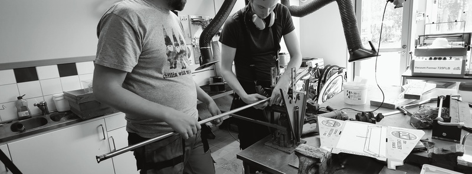
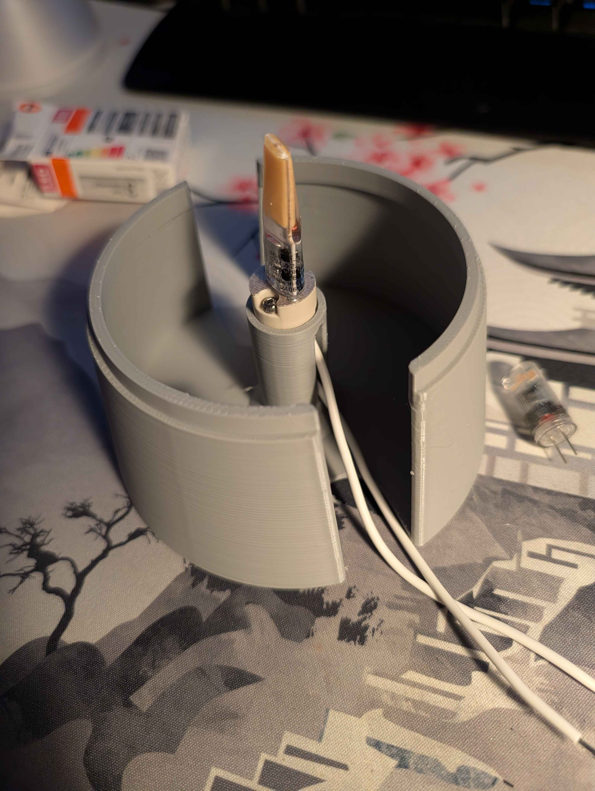
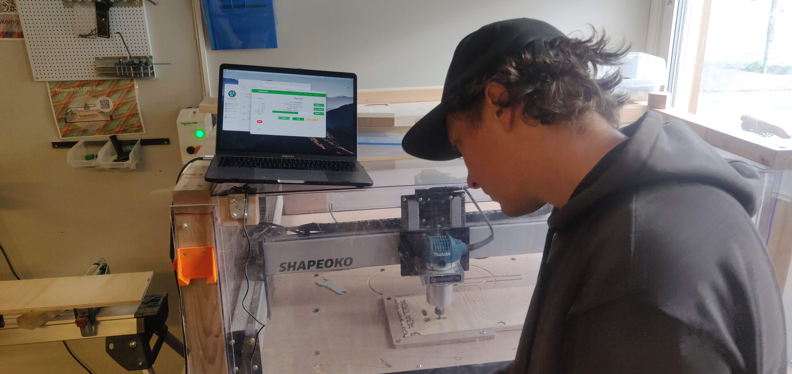
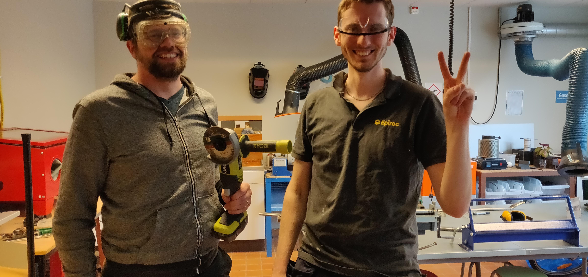

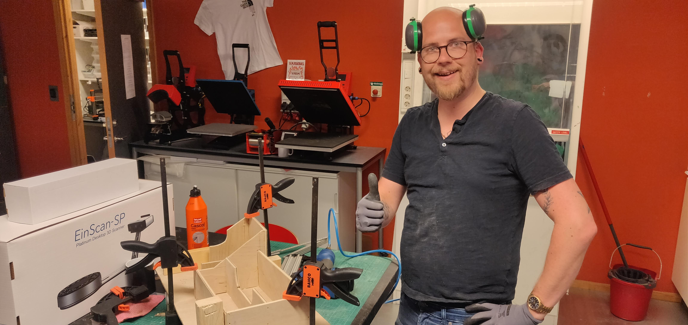
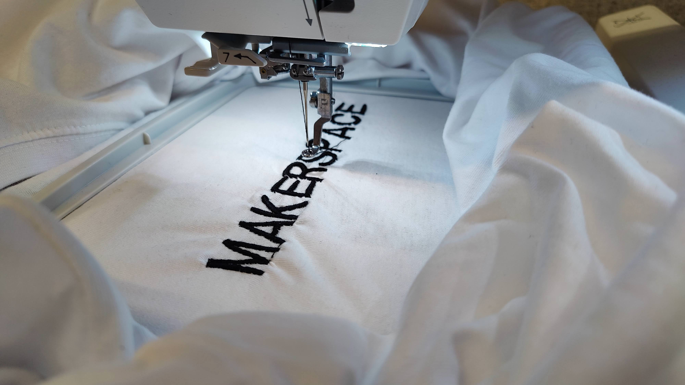

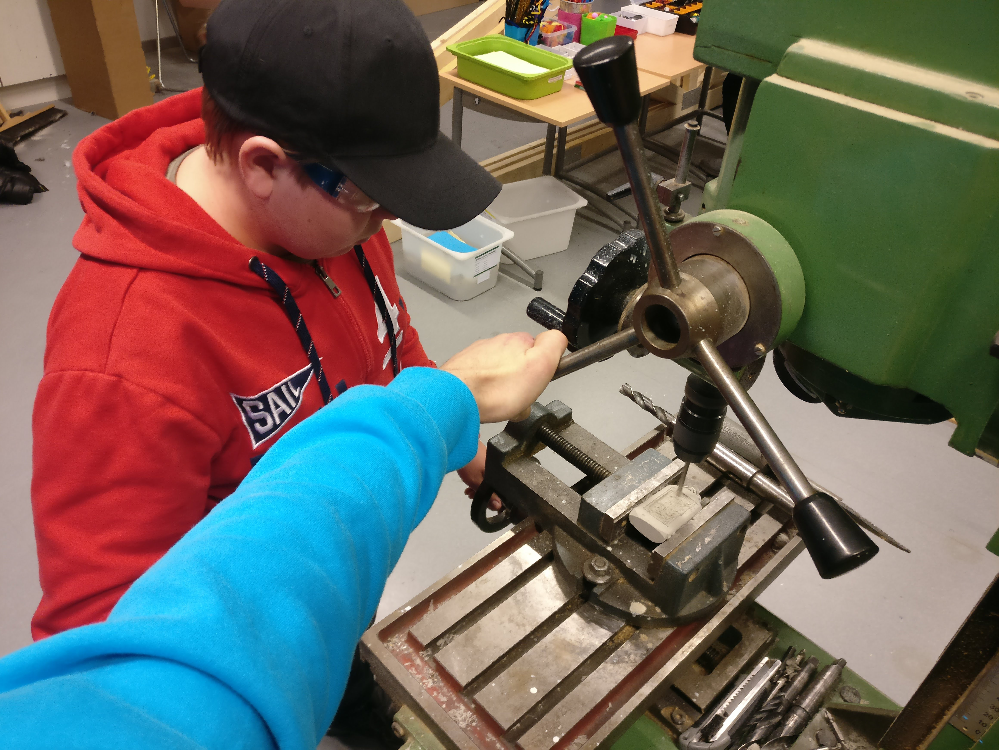

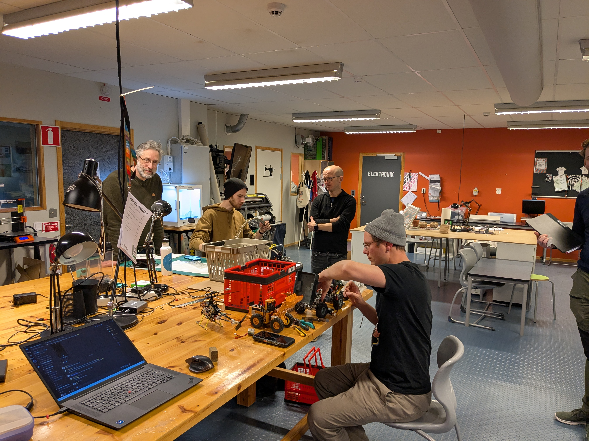
Om UppMAKE
Vi är en ideell förening där teknik möter kreativitet.
UppMAKE – här slutar idéer vara idéer. Vi är en öppen gemenskap där du kan bygga, testa och göra egna idéer verkliga.
Samarbetspartners & sponsorer
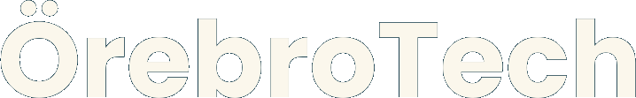
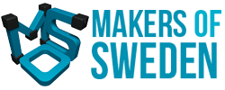
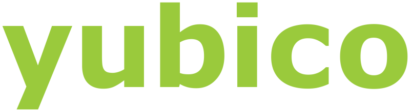
Medlemskap
UppMAKE är en ideell förening. Medlemskapet kostar 200 kr per år och ger tillgång till community, aktiviteter och verkstadsmiljö.
Verkstad och fokusområden
- 3D-skrivare, laserskärare, CNC-maskiner och elektronikrum.
- Trä- och metallbearbetning, textil och cykelreparationer.
- Basutbildningar inom CAD, elektronik, programmering och svetsteori.
- Veckovisa öppettider i makerspacet samt workshops och events.
FAQ
Vad är ett makerspace?
Ett makerspace är en plats och/eller en gemenskap där man jobbar med sina egna idéer – sida vid sida med andra. Man delar verktyg, kunskap och erfarenheter. Ett sammanhang och en kultur där kreativa personer får möjlighet att samexistera.
Hur blir jag medlem och vad kostar det?
Du fyller i medlemsansökan och betalar medlemsavgiften. Medlemskapet kostar 200 kronor per år och följs av en introduktion.
Vilka verktyg och maskiner har ni?
Vi har bland annat 3D-skrivare, laserskärare, CNC-maskiner, elektronikarbetsstationer och verktyg för träbearbetning.
Är det öppet för alla?
Ja, alla över 16 år är välkomna ensamma. Barn är välkomna i vuxet sällskap. Vi strävar efter en inkluderande och kreativ miljö för olika erfarenhetsnivåer.
Har ni regler för maskinanvändning?
Ja. För säkerhet och underhåll krävs introduktion och utbildning innan maskinerna används.
Ansvariga / Styrelsen
01 Ordförande — Adrian Hällzon
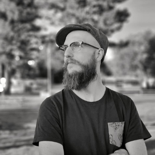
Drivs av samhällsutveckling inom innovation och teknik. Nyckelperson i utveckling av innovativa miljöer i makerrörelsen i Örebro, med fokus på att koppla ihop människor och idéer.
Nuvarande arbete: Verksamhetsutvecklare och digital pedagog.
02 Kassör — Oscar Fransson
Stöttar ekonomiarbetet och föreningens löpande administration.
03 Sekreterare — Markus Willander
Ansvarar för struktur, dokumentation och uppföljning av styrelsearbetet.
04 Ledamot — Erica Hjelm
Bidrar i styrelsearbetet med fokus på utveckling av verksamheten.
05 Ledamot — Melinda Borgenfalk
Medverkar i planering och genomförande av föreningens aktiviteter.
06 Ledamot — Joakim
Medverkar i planering och genomförande av föreningens aktiviteter.
Stadgar
Stadgarna (uppdaterade 2024-01-16) beskriver föreningens namn, ändamål, medlemskap, styrelse, beslutsordning och hur årsstämman går till.
Visa stadgar Dölj stadgar
§1 Föreningens namn, säte samt organisationsnummer
Föreningens fullständiga namn är Uppfinnare-Makerspace Örebro. Föreningen har sitt säte i Örebro och organisationsnummer 875002-0730.
§2 Ändamål
Föreningen verkar för kamratcirklar och kurser inom mekanik, elektronik och andra tekniska områden. Föreningen ska främja medlemmarnas innovativa intressen och vara en allmän träffpunkt för både aktiva och passiva medlemmar.
Föreningen ska aktivt motverka diskriminering på grund av kön, könsöverskridande identitet eller uttryck, etnisk tillhörighet, religion eller annan trosuppfattning, funktionsnedsättning, sexuell läggning eller ålder.
§3 Föreningsform samt oberoende
Föreningen är en ideell förening som är religiöst och partipolitiskt oberoende.
§4 Verksamhetsår
Föreningens verksamhetsår är kalenderår.
§5 Medlemmar samt medlemsavgift
En person kan antas som medlem om den godkänner stadgarna, vill verka för föreningens syfte och aktivt tar ställning för medlemskap genom att betala medlemsavgiften.
Medlemsavgiften fastställs varje år på årsstämman och ska betalas senast i februari, eller senast två veckor efter årsstämman. Medlem som allvarligt skadar föreningen kan stängas av av styrelsen eller årsstämman.
§6 Styrelse samt beslutande organ
Beslutande organ är styrelsen samt årsstämma eller extra årsstämma. Styrelsen väljs av medlemmarna på årsstämman.
Styrelsen ska som grund bestå av ordförande (1 år), kassör (2 år) och sekreterare (1 år). Vid lika röstetal i styrelsen har ordföranden utslagsröst.
§7 Firmateckning
Föreningen tecknas av styrelsens ordförande samt kassör, var för sig, alternativt av en eller flera av styrelsen utsedda myndiga personer. Utsedd person ska återrapportera till styrelsen.
§8 Stadgeändring
För ändring av stadgarna krävs beslut på två på varandra följande stämmor med minst en månads mellanrum, varav en ska vara årsstämma, med minst 2/3 av avgivna röster.
§9 Upplösning av föreningen
För upplösning krävs beslut på två på varandra följande årsstämmor med minst tre månaders mellanrum och minst 2/3 av avgivna röster.
Föreningens tillgångar ska först användas till skulder och därefter skänkas till ändamål förenliga med föreningens syfte. Mottagare beslutas av sista årsstämman.
§10 Tidpunkt och kallelse för årsstämma
Årsstämma hålls normalt i februari eller mars. Kallelse skickas via e-post senast tre veckor före stämman. Väsentliga frågor, som stadgeändring eller upplösning, ska anges i kallelsen.
Verksamhetsberättelse, revisionsberättelse, verksamhetsplan, budget och motioner ska vara tillgängliga för medlemmarna senast en vecka före årsstämman.
§11 Motioner och förslag till årsstämma
Motioner kan skickas in under året, dock senast två veckor före årsstämma eller extra årsstämma. Styrelsen ska skriva yttrande för varje motion senast en vecka innan stämman.
§12 Rösträtt, beslut och omröstning på årsstämma
Medlemmar som varit medlemmar de senaste 30 dagarna har rösträtt. Beslut fattas med acklamation eller omröstning. Vid lika röstetal har ordföranden utslagsröst om ordföranden är röstberättigad.
§13 Valbarhet
Valbar till styrelsen är röstberättigad medlem. Styrelsemedlem samt anhörig till styrelsemedlem är inte valbar till revisor.
§14 Årsstämmans dagordning
- §1 Årsstämmans öppnande
- §2 Fastställande av röstlängd
- §3 Val av ordförande, vice ordförande och sekreterare för stämman
- §4 Val av justerare och rösträknare
- §5 Fråga om årsstämman utlysts enligt stadgarna
- §6 Godkännande av dagordningen
- §7 Föredragning av verksamhetsberättelse och ekonomisk rapport
- §8 Revisionsberättelse
- §9 Fråga om ansvarsfrihet för styrelsen
- §10 Val av styrelseledamöter och revisorer (ordförande, kassör, ledamöter, revisor)
- §11 Fastställande av medlemsavgift
- §12 Verksamhetsplan
- §13 Budget
- §14 Inkomna motioner och propositioner
- §15 Stämmans avslutande
§15 Extra årsstämma
Styrelsen kan kalla till extra årsstämma när som helst under året. Styrelsen ska också kalla till extra årsstämma om revisorn eller minst 10% av medlemmarna begär det.
Kontakt
Vill du besöka, stötta eller samarbeta?
Hör av dig så berättar vi mer om verksamheten och aktuella projekt.